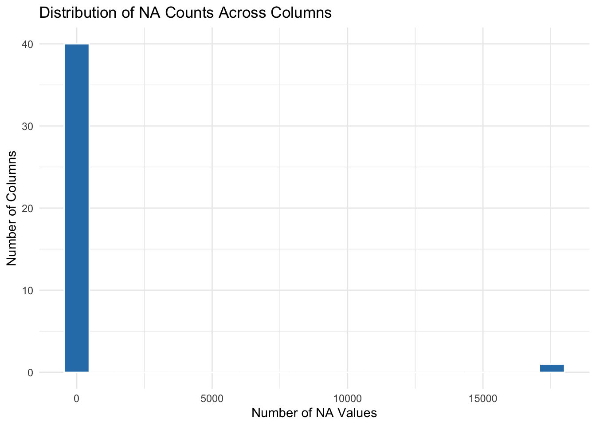
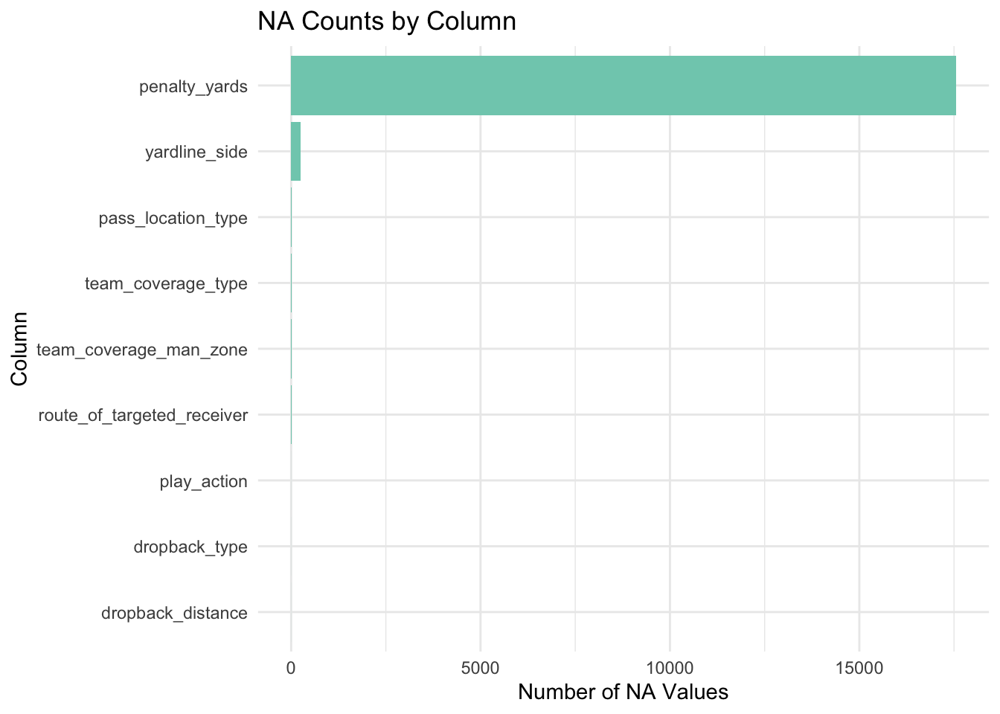
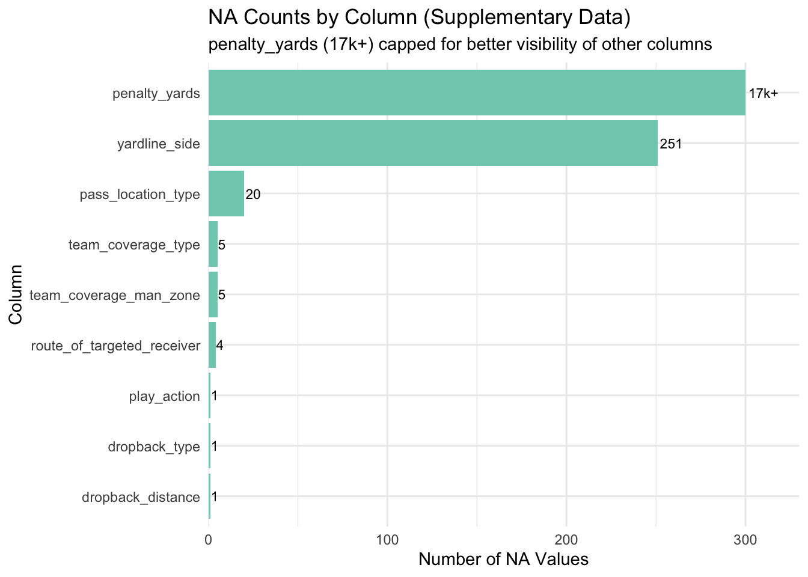

All of the data for this project is directly provided by AWS/the NFL itself, via the Kaggle competition. However, the data is unseen by the general public and does not have any published work on it already. The data will be static for the duration of the project, with no updates.
2.1 Description
The data can be broken down into 3 main categories:
Supplementary This is a single csv (41 columns by 18009 rows) that provides high-level contextual data about each play from the 2023 NFL season. Every row is identified by a unique play_id, coming from each unique game within a given week 1-18. This table provides info such as pre-snap offensive formation, play outcome, pre-snap score, time of game the play happened at, as well as other relevant info.
Input This is broken down into 18 csv files (23 columns by ~30k rows each) – one for each week of the season. Within each file, we have groups of rows for every player that participated in a game that week. For every player, there are multiple rows for every play they participated in, corresponding to the number of frames within that play.
Output This is also broken down into 18 csv files (6 columns by ~30k rows each), with each file again representing one week of the season. The data in this file contains the play ID, the player ID, and their final position on the field at the time the play ends.
## All N/A values come from the supplementary data set -- most come the "penalty_yards" columnsupp_na_counts <-colSums(is.na(supplementary))no_pen_na <-is.na(supplementary['penalty_yards'])sum(no_pen_na)
[1] 17549
Code
sum(supp_na_counts)
[1] 17837
Code
# Show N/A values by columncols_with_na <-function(df) { na_counts <-colSums(is.na(df)) na_counts[na_counts >0]}cols_with_na(supplementary)
# Histogram of NA counts per column for the `supplementary` datasetlibrary(ggplot2)# Get NA counts for each column in supplementary datasetna_by_col <-data.frame(column =names(supplementary),na_count =colSums(is.na(supplementary)))# Create histogram of NA countsggplot(na_by_col, aes(x = na_count)) +geom_histogram(bins =20, fill ="#2c7fb8", color ="white") +labs(title ="Distribution of NA Counts Across Columns",x ="Number of NA Values",y ="Number of Columns" ) +theme_minimal()

Code
# Optional: Show which columns have the most NAsna_by_col %>%filter(na_count >0) %>%arrange(desc(na_count))
# If you want a bar chart showing NA counts for each specific column (easier to see which columns have NAs):# Bar chart of NA counts by column (only showing columns with NAs)na_by_col %>%filter(na_count >0) %>%ggplot(aes(x =reorder(column, na_count), y = na_count)) +geom_col(fill ="#7fcdbb") +coord_flip() +labs(title ="NA Counts by Column",x ="Column",y ="Number of NA Values" ) +theme_minimal()

Code
# Get NA counts for each column in supplementary datasetna_by_col <-data.frame(column =names(supplementary),na_count =colSums(is.na(supplementary))) %>%filter(na_count >0) %>%arrange(desc(na_count))# Cap penalty_yards for better visualizationna_by_col_capped <- na_by_col %>%mutate(na_count_display =ifelse(column =="penalty_yards", 300, na_count),label =ifelse(column =="penalty_yards", "17k+", as.character(na_count)) )# Bar chart with capped scaleggplot(na_by_col_capped, aes(x =reorder(column, na_count), y = na_count_display)) +geom_col(fill ="#7fcdbb") +geom_text(aes(label = label), hjust =-0.1, size =3) +coord_flip() +scale_y_continuous(limits =c(0, 300), expand =expansion(mult =c(0, 0.1))) +labs(title ="NA Counts by Column (Supplementary Data)",subtitle ="penalty_yards (17k+) capped for better visibility of other columns",x ="Column",y ="Number of NA Values" ) +theme_minimal()

These graphs show that the vast majority of N/A data comes from the penalty_yards column, which is to be exapected, as most plays in the data set did not result in any penalties, and therefore would not have any penalty yards associated with them.